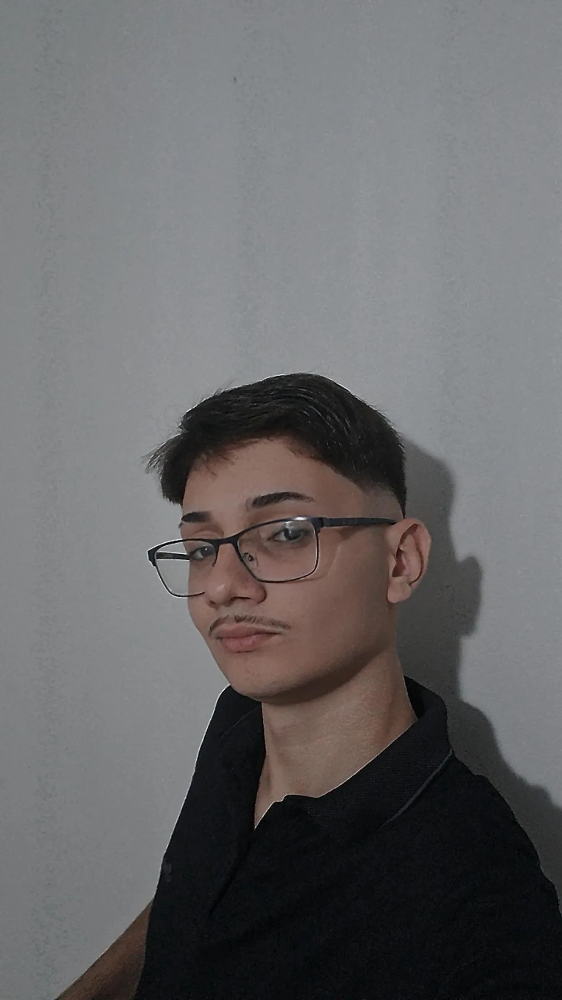

Olá! Sou João Guilherme, um jovem criativo de 17 anos apaixonado por multimídia e design.
Estou na reta final do meu curso de multimídia no SENAI, onde desenvolvi habilidades em design gráfico,
edição de vídeo e produção de conteúdo digital. Aqui você encontrará uma seleção dos meus melhores trabalhos e projetos,
que refletem minha dedicação e entusiasmo
Meu portfólio inclui uma variedade de projetos,
desde campanhas publicitárias e vídeos promocionais até design de interfaces e animações.
Cada peça é resultado de um processo cuidadoso e inovador, com foco na combinação perfeita entre estética e funcionalida
Explore meu trabalho,
conheça mais sobre minha trajetória e não hesite em entrar em contato para discutir sobre possíveis colaborações ou oportunidades.
Estou sempre em busca de novos desafios e oportunidades
Desde que comecei minha jornada no SENAI, mergulhei de cabeça nas diversas facetas da multimídia,
explorando desde o design gráfico até a edição de vídeo e a produção de conteúdo digital.
Cada projeto que você encontra aqui é uma peça do meu aprendizado e desenvolvimento profissional,
refletindo não apenas minhas habilidades técnicas, mas também minha visão criativa e dedicação
O Que Você Encontrará Aqui em Meu portfólio é uma coleção de projetos que mais me orgulham e que melhor ilustram minhas competências
e interesses. Se você está em busca de designs visualmente atraentes e funcionais,
esta seção mostra minhas logotipos, materiais promocionais e gráficos para mídias sociais.
Cada peça é projetada com atenção aos detalhes e um olhar atento às necessidades do cliente e ao impacto visual.